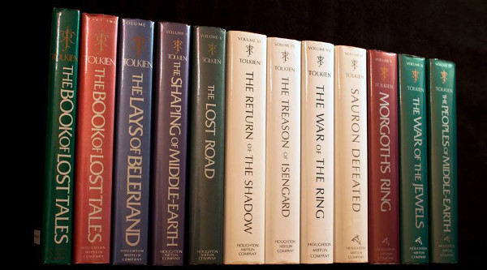

Obras

Obras publicadas no Brasil:
O Hobbit
O Senhor dos Anéis
O Silmarillion
Contos Inacabados de Númenor e da Terra-média
Roverandom
Mestre Gil de Ham
Roverandom
As Cartas de J.R.R. Tolkien
Sobre Histórias de Fadas (Leaf by Niggle )
Os Filhos de Húrin
As Aventuras de Tom Bombadil
A Lenda de Sigurd e Gudrún
Mr. Bliss
As Cartas do Papai Noel
A Última Canção de Bilbo
A Queda de Arthur
Obras publicadas em inglês:
The Hobbit
The Lord of The Rings
The Silmarillion
Unfinished Tales of Númenor and Middle Earth
Mr. Bliss
Leaf by Niggle
Farmer Giles of Ham
The Adventures of Tom Bombadil and other Verses from the Red Book
The Legend of Sigurd and Gudrún
The Father Christmas Letters
The Tolkien Reader
The Monster and the Critics
Smith of Wootten Major
The Road Goes Ever On: A Song Cycle
Letters of J.R.R. Tolkien
Finn and Hengest: The Fragment and the Episode
A Middle English Vocabulary
Sir Gawain & The Green Knight
Songs for the Philologists
The Reeve’s Tale
Ancrene Wisse: The English Text of the Ancrene Wisse Sir Orfeo
Sir Gawain and the Green Knight, Pearl and Sir Orfeo
The History of Middle-earth
The History of Middle-earth I – The Book of Lost Tales
The History of Middle-earth II – The Book of Lost Tales II
The History of Middle-earth III – The Lays of Beleriand
The History of Middle-earth IV – The Shaping of Middle-earth
The History of Middle-earth V – The Lost Road and Other Writings
The History of Middle-earth VI – The Return of the Shadow
The History of Middle-earth VII – The Treason of Isengard
The History of Middle-earth VIII – The War of the Ring
The History of Middle-earth IX – Sauron Defeated
The History of Middle-earth X – Morgoths Ring
The History of Middle-earth XI – The War of the Jewels
The History of Middle-earth XII – The Peoples od Middle-earth